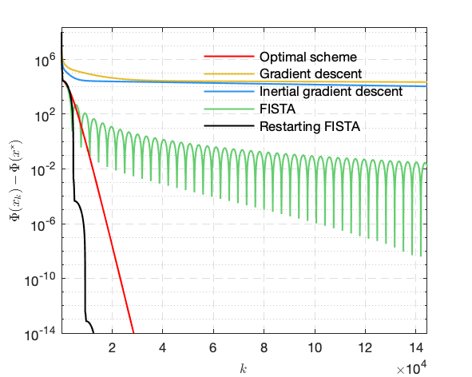

|
Gradient descent, Nesterov's acceleration and FISTA
Here, we present simple comparison on gradient descent and its variants (heavy-ball method, Nesterov’s accelerated scheme and restarting FISTA) when applying to solve a simple least square estimation problem which is described below
\[
\min_{x \in \mathbb{R}^n} { F(x) = \tfrac{1}{2} \|Ax - b\|^2 } ,
\]
where \(b \in \mathbb{R}^n\) and \(A \in \mathbb{R}^{n\times n}\) is of the form
\[
A =
\begin{bmatrix}
2 & -1 & & & \\
-1 & 2 & -1 & & \\
& & \dotsm & & \\
& & -1 & 2 & -1 \\
& & & -1 & 2 \
\end{bmatrix}_{n} .
\]
The gradient descent for sovling the above problem would be
\[
\begin{align}
x_{k+1} &= x_k - \gamma \nabla F(x_k) \\
&= x_k - \gamma A^T (Ax_k - b) .
\end{align}
\]
In the experiment, consider \(n = 50\) and simply set \(b = 0\).
Creating matrix \(A\)
A = 2*eye(n) - diag(ones(n-1,1), -1) - diag(ones(n-1,1), 1);
Parameters All the parameters of the algorithm will be stored in a structure +para+
para.n = n; % dimension of the problem
para.gamma = 1.0 /norm(A)^2; % step-size
para.maxits = 1e6 + 1; % maximum number of iteration
para.tol = 1e-16; % stopping criterion for ||x_{k}-x_{k_1}||
para.x0 = 1e4*ones(n, 1); % starting point
Gradient and objective function
The gradient and objective function will be dealt by MATLAB function handle
% define function handles
objF = @(x) norm(A*x-b)^2 /2;
gradF = @(x) (A')*(A*x - b);
m-file source code for gradient descent The code for gradient descent is written in a solo file.
% funciton for gradient descent
function [x, its, ek, fk] = func_GD(para, gradF, objF)
% this function returns
% x the solution of the problem
% total number of iteration needed to reach the stopping criterion
% history of ||x_{k} - x_{k-1}||
% history of objective function value F(x_{k})
% get the parameters
n = para.n;
gamma = para.gamma;
tol = para.tol;
maxits = para.maxits;
ek = zeros(maxits, 1); % record ||x_{k}-x_{k-1}||
fk = zeros(maxits, 1); % record objective function value
x = para.x0; % set the initial point
its = 1;
while(its<maxits)
fk(its) = objF(x);
x_old = x;
x = x - gamma*gradF(x);
%%%%%%% compute residual and checking stopping criterion
res = norm(x_old-x, 'fro');
ek(its) = res;
if (res/prod(n)<tol)||(res>1e10); break; end
its = its + 1;
end
fprintf('\n');
ek = ek(1:its-1);
fk = fk(1:its-1);
m-file source code for FISTA
% function for FISTA
function [x, its, ek, fk] = func_FISTA(para, gradF, objF)
% this function returns
% x the solution of the problem
% total number of iteration needed to reach the stopping criterion
% history of ||x_{k} - x_{k-1}||
% history of objective function value F(x_{k})
% get the parameters
n = para.n;
gamma = para.gamma;
tol = para.tol;
maxits = para.maxits;
ek = zeros(maxits, 1); % record ||x_{k}-x_{k-1}||
fk = zeros(maxits, 1); % record objective function value
x = para.x0; % set the initial point
y = x;
t = 1; % for FISTA parameter updates
its = 1;
while(its<maxits)
fk(its) = objF(x);
x_old = x;
x = y - gamma*gradF(y);
% computing the FISTA parameter
t_old = t;
t = (1 + sqrt(1+4*t_old^2)) /2;
a = min(1, (t_old-1) /t);
% extrapolation update
y = x + a*(x-x_old);
%%%%%%% compute residual and checking stopping criterion
res = norm(x_old-x, 'fro');
ek(its) = res;
if (res/prod(n)<tol)||(res>1e10); break; end
its = its + 1;
end
fprintf('\n');
ek = ek(1:its-1);
fk = fk(1:its-1);
Similarly, we can write the code for heavy-ball method and restarting FISTA.
Comparison The numerical comparison of gradient descent, inertial gradient descent, FISTA and restarting FISTA is illustrated in the figure below.

Codes for solving LASSO problem It is very easy to have the code for LASSO problem once we have the code for gradient descent, as we only need to change
% gradient descent
x = x - gamma*gradF(x);
to
% proximal gradient descent
x = wthresh( x - gamma*gradF(x), 's', mu*gamma);
where \(\mu\) is the tradeoff parameter in front of the \(\ell_1\)-norm.
|